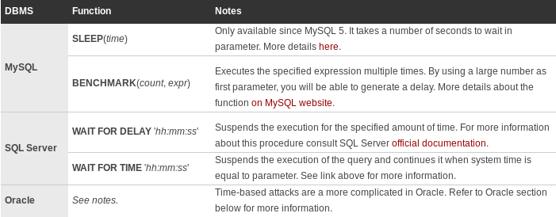

Time-Based Blind SQL Injection Attacks
Time-Based
Time-based techniques are often used to achieve tests when there is no other way to retrieve information from the database server. This kind of attack injects a SQL segment which contains specific DBMS function or heavy query that generates a time delay. Depending on the time it takes to get the server response, it is possible to deduct some information. As you can guess, this type of inference approach is particularly useful for blind and deep blind SQL injection attacks.
Injecting a Time Delay
Time-based attacks can be used to achieve very basic test like determining if a vulnerability is present. This is usually an excellent option when the attacker is facing a deep blind SQL injection. In this situation, only delay functions/procedures are necessary. The table below shows how the query execution can be paused in each DBMS.

MySQL sleep section link
MySQL Benchmark section link
SQLServer Wait for Delay section link
Note: Always make sure you know which database system is used before beginning your time-based tests. You can try to inject delay functions until you find one that generates a positive result. If none of the above generates a slow response, fallback to techniques enumerated in the article about database fingerprinting.
Identifying vulnerabilities is not the only utility of time-based attacks. When the time delay is integrated in a conditional statement, the attacker will be able to retrieve information from the database an even extract data. This technique relies on inference testing which is explained in this article. Simply put, by injecting a conditional time delay in the query the attacker can ask a yes/no question to the database. Depending if the condition is verified or not, the time delay will be executed and the server response will be abnormally long. This will allow the attacker to know if the condition was true or false. Below is a reference of basic conditional statements in each database system.

As you can guess, the injected segments will differ slightly depending of the purpose of the time-based attack. Let’s now see how these attacks can be done in different DBMS.
MySQL Time-Based Attack
Injecting a time delay for this DBMS is pretty straight forward. Since SLEEP() and BENCHMARK() are both functions, they can be integrated in any SQL statement. The example below shows how a hacker could identify if a parameter is vulnerable to SQL injection using this technique (a slow response would mean the application uses a MySQL database).
Resulting query (with malicious SLEEP injected).
SELECT * FROM products WHERE id=1-SLEEP(15)
Resulting query (with malicious BENCHMARK injected).
SELECT * FROM products WHERE id=1-BENCHMARK(100000000, rand())
The attacker may also be interested to extract some information or at least verify a few assumptions. As mentioned earlier, this can be done by integrating the time delay inside a conditional statement. Here again, MySQL makes it pretty easy since it provides an IF() function. The following example shows how it’s possible to combine inference testing with time-based techniques to verify database version.
Resulting query - Time-based attack to verify database version.
SELECT * FROM products WHERE id=1-IF(MID(VERSION(),1,1) = '5', SLEEP(15), 0)
If server response takes 15 seconds or more, we can conclude that this database server is running MySQL version 5.x. The example features SLEEP(), but it could easily adapted to use BENCHMARK().
SQL Server Time-Based
In order to inject time delays in a statement executed by SQL Server, you will need to use stack queries. The process is overall pretty simple. Here is how an attacker could determine if a field is vulnerable to SQL injection when the database is SQL Server (a positive result is indicated by a slow response).
Resulting query (with malicious SLEEP injected).
SELECT * FROM products WHERE id=1; WAIT FOR DELAY '00:00:15'
By using a conditional statement, it would also be possible to extract some information from the database. Instead of determining the version, let's see if the user is sa (system administrator) using time-based technique.
Resulting query (verify if user is sa).
SELECT * FROM products WHERE id=1; IF SYSTEM_USER='sa' WAIT FOR DELAY '00:00:15'
As a side note I should mention that WAIT FOR TIME is rarely used, but it could help bypassing weak blacklist filters only checking for the popular WAIT FOR DELAY instruction.
Oracle Time-Based Attack
With Oracle things are a little bit different. The SLEEP() function can be used, however it needs to be integrated in a PL/SQL block:
Executing SLEEP() in Oracle (execution suspended 15 seconds).
BEGIN DBMS_LOCK.SLEEP(15); END;
Since Oracle does not support stacked queries in dynamic SQL queries, the only way to get the statement above executed by the database would be to find an SQL injection vulnerability in PL/SQL code or in an anonymous PL/SQL block. This kind of situation is pretty rare and the best alternative is to inject a heavy query instead of calling the SLEEP() function. While it is considered to be the last option on other DBMS, it is the only way to achieve time-base attacks in dynamic queries on Oracle. For more information about this topic and for examples of heavy queries you could use on Oracle (or any other DBMS), take a look at the article about heavy queries for time-based attacks.
Time-Based Attacks Pros and Cons
One main advantage of this technique is to have little to no impact on logs, especially when compared to error-based attacks. However, in situations where heavy queries or CPU intensive functions like MySQL's BENCHMARK() must be used, chances are good that system administrators realize something is going on.
Another thing to consider is the length of the delay you inject. This is especially important when testing Web applications. The server load and the network speed may have a huge impact on the response time. You need to pause the query long enough to make sure these uncertain factors do not falsify your results. On the other hand, you want the delay to be short enough to test the application in a reasonable time. This becomes particularly difficult when no exact delay can be injected.